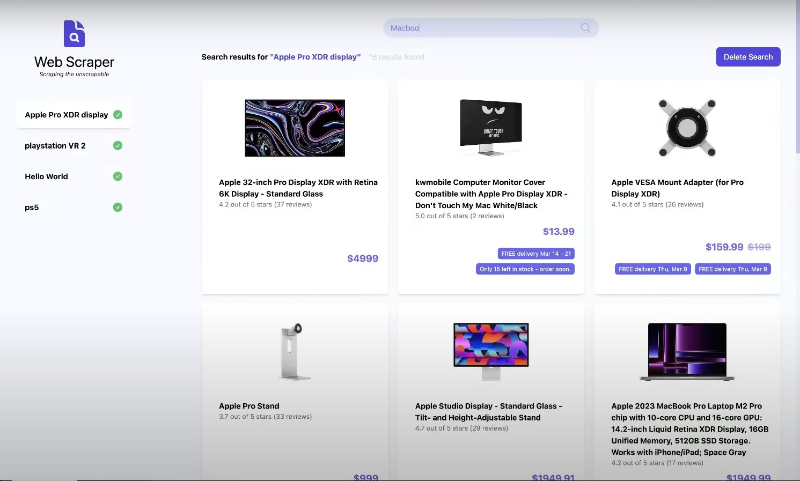

Saludos, Soy Henry
Soy Licenciado en Computación orientado al trabajo remoto. Trabajando en contribuir al ciclo de vida de software haciendo más fácil que entregue valor y genere impacto.
ProyectosSobre mí
¡Conoce más sobre mí!
Hola, mi nombre es Henry Monroy y soy un intuitivo, explorador y automotivado consultor IT.
Toda mi vida laboral he trabajado en el área de tecnología. Cuento con experiencia en el área tecnológica SysAdmin/SysOps, desarrollo y HelpDesk. Me gradué de Licenciado en Computación en la Universidad Nueva Esparta en Caracas, Venezuela en el 2019.
Tengo un vasto rango de intereses que me mantienen activo. Desde la lectura, entrenamiento físico hasta competir en torneos de deportes electrónicos. Estoy siempre buscando nuevas experiencias y el interés para mantenerme comprometido y aprender cosas nuevas.
Creo que nunca se debe dejar de aprender y eso es lo que me he comprometido a hacer. Tengo pasión por la tecnología y siempre deseo traspasar los límites de lo posible. Me emociona ver a dónde me dirige este camino y siempre estar dispuesto a nuevas oportunidades.
Mis habilidades
Proyectos

Amazon Web Scraper
Web Scraper enfocado en Amazon creado con React, Firebase y Bright Data.